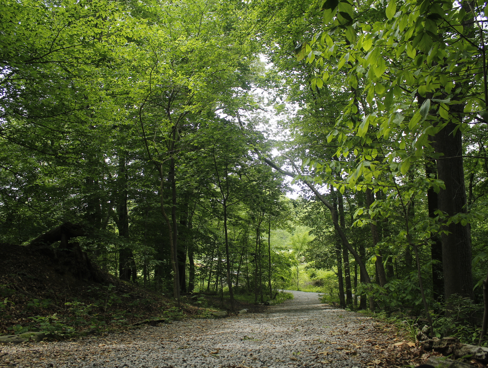

I use my camera as a tool to capture the world around me. Most of the pictures I take tells a story that one can remember. I really enjoy capturing memorable moments that one can keep for a very long time, and cherish the moment. My work includes; baby showers, birthday parties, corporate events, wedding ceremonies, graduation parties, children birthday parties, photo-shot, and family photo. My service to you will definitely meet your ultimate satisfaction. Kindly contact me. I"m always at your service. Thank You!